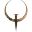
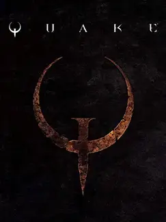

Quake |
|
| Tiempo de juego | 6m 52s |
| Última actividad | 12/12/2025 1:40:50 |
| Añadido | 21/9/2025 16:07:41 |
| Modificado | 10/12/2025 13:51:39 |
| Estado de finalización | Jugado |
| Librería | Playnite |
| Fuente | |
| Plataforma | PC (Windows) |
| Fecha de lanzamiento | 22/6/1996 |
| Puntuación de la Comunidad | 83 |
| Puntuación de la Crítica | |
| Puntuación de usuario | |
| Género | Shooter |
| Desarrollador | id Software |
| Editor | clickBOOM GT Interactive Software id Software MacSoft Games Pulse Interactive PXL computers Sega |
| Característica | Co-Operative Multiplayer Single Player |
| Enlaces | 🌟Enhanced Edition |
| Tag | |
Nos metemos en la oscuridad. Quake fue el salto de id Software al verdadero 3D, y se llevaron todo puesto. Dejaron atrás el sci-fi de Doom para sumergirnos en una pesadilla gótica, lovecraftiana y brutal. Es un juego de pasillos oxidados, calabozos sombríos y una atmósfera opresiva que te aplasta, todo bañado por la banda sonora industrial y legendaria de Trent Reznor (Nine Inch Nails).
La jugabilidad es pura agilidad y violencia. Es un ballet de "strafe-jumping" y reflejos, con un arsenal icónico donde la escopeta, el lanzagranadas y el puto Nailgun son tus mejores amigos. Y acá nació una leyenda: el "rocket jump". Una técnica no intencionada, descubierta por los jugadores, que redefinió el movimiento en los shooters para siempre.
Pero la experiencia no termina ahí. La versión completa de este monstruo te trae los dos Mission Packs originales de los 90, "Scourge of Armagon" y "Dissolution of Eternity", que expanden la locura con nuevos niveles, enemigos y armas. Y como si fuera poco, los capos de MachineGames (los del Wolfenstein nuevo) se mandaron dos episodios completamente nuevos que son una carta de amor al original.
La mejor forma de jugar todo este paquete hoy es, sin lugar a dudas, el Remaster de 2021 hecho por los magos de Nightdive Studios. No es un remake, es la restauración perfecta. Le metieron mejoras gráficas sutiles, soporte para monitores anchos y un multiplayer que funciona de 10, pero el juego se siente y se juega exactamente igual que el clásico. Es el original, pero sin ningún dolor de cabeza técnico.
Quake es más que una campaña increíble; es el padre del multiplayer online como lo conocemos. Definió las LAN parties, los deathmatches y sentó las las bases de los e-sports. Tenés que jugarlo para entender el origen de la competencia en PC y para vivir uno de los shooters más influyentes y atmosféricos de la historia. Es una pieza fundamental del ADN gamer.
• QuakeSpasm - Engine Moderno que conserva la estética original
• Accedes a ellas con los *.bat dentro de la carpeta del juego.